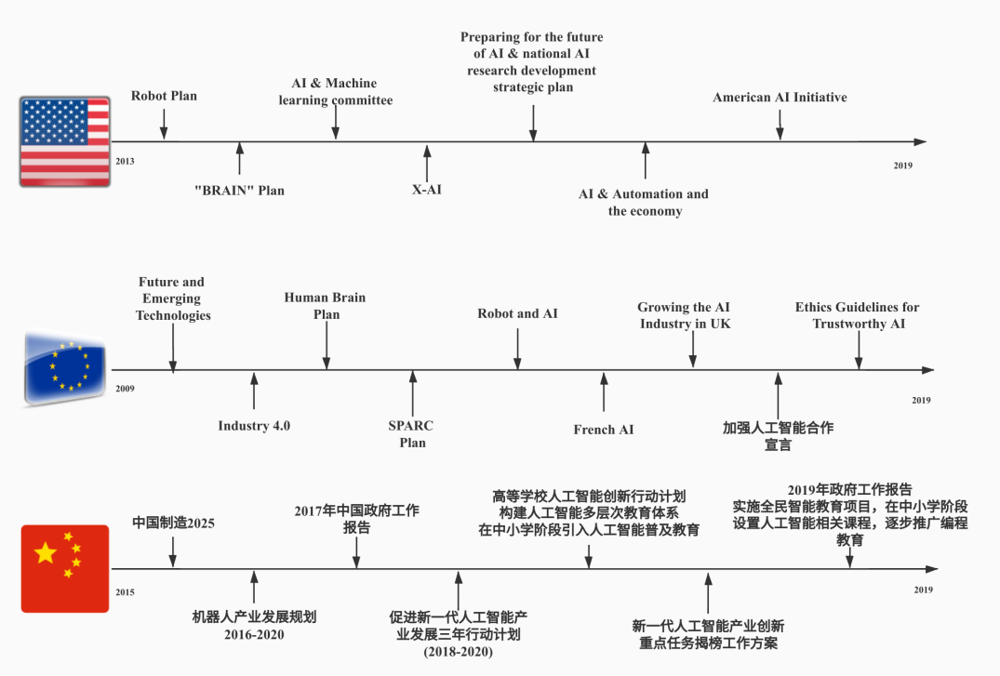

人工智能的发展史：忽冷忽热高冷女神的恋爱史
古代的人工智能：播撒人工智能的思想火种
不论在东方还是西方，在古代的神话故事或者人物传记中，都有这样一些“哲学家”或者“极客”，有着那个时代最前卫的想象力和创造力，希望能够将无思想无灵魂的实物，赋予人的思想和行为特征，使其具备“智慧”的能力，实现“人造人”的科幻创举。先民对于人工智能的追求表现在诸多神话、传说、预言以及制作机器人偶的实践之中。
在东方，远在3000多年前的中国，寓言故事《列子》“汤问篇”中就有“偃师献技”的故事，就已经出现了有文本记录的第一个“人工智能机器人”，由皮革、胶漆及各种颜料组成，能够为周穆王献歌献舞；《三国演义》第一百二十回“司马懿占北原渭桥 诸葛亮造木牛流马”其中描写1800多年前三国时期的诸葛亮六出祁山，七擒孟获，威震中原，发明了一种新的运输工具，叫“木牛流马”，解决了几十万大军的粮草运输问题，这种工具放到现在，就是整合了自动驾驶技术和自动路径规划的送货机器人；唐代志怪小说《纪闻》讲述了1300多年前，出现了专供唐朝皇后梳妆打扮的自动梳妆台，中央立着镜台，台下分为两层，都设有门窗，皇后如果要沐浴梳洗，就打开门，里面就会出现一个女性的木头人，把木梳、毛巾递给皇后，然后退到一旁。皇后需要“面脂妆粉，眉黛髻花”等化妆品的时候，木妇人就会及时送到皇后手中，每一次送物品，木妇人都会及时退出来，礼貌地关上门，等皇后梳洗打扮整齐，门窗就会自动关闭。尽管这些故事当中描述的“智能景象”无法真实考究，但是中国先人关于“人工智能”丰富的想象力一代代流传了下来。
在西方，关于“人工智能”的故事也早早记录在古希腊神话之中。在流传下来的神话故事里面，爱神阿佛洛狄忒的丈夫赫菲斯托斯是一个长相丑陋但心灵善良的匠人，他制造的黄金机器人女仆不就是现代聊天机器人的思想原型吗？公元前43-公元18年的罗马诗人奥维德在《变形记》第十章中讲了一个塞浦路斯国王皮格马利翁与雕像仙女伽拉忒亚相爱的故事，这个故事放到今天，与2015年在日本发生的人类与机器人的首次婚礼相映成趣。在欧洲中世纪出现了使用巫术或炼金术将意识赋予无生命物质的传说，如波斯人古代化学家贾比尔·伊本·海扬在其书中描述的诞生于实验室的名为Takwin的基本生命体。中世纪出生于瑞士的帕拉塞尔苏斯，传说用炼金术创造了的生物何蒙库鲁兹,日本当代知名动画《钢之炼金术师》当中霍恩海姆的原型即是这位中世纪的药学家和化学家。19世纪西方的幻想小说中出现了人造人和会思考的机器之类题材，例如玛丽·雪莱的《弗兰肯斯坦（科学怪人）》和卡雷尔·恰佩克的《罗素姆的万能机器人》。到了20世纪，随工业革命带来的科学技术的巨大进步，存在于科幻作品中的“人造人”想象被搬上了大屏幕，如2008年美国导演安德鲁斯坦顿制作的电影《WALL E》为我们展现了一个“有血有肉”的人工智能机器人“瓦力”[图1]。这些，都是人类历史上对于“人工智能”美好的想象，也为人类的文明史播洒下了人工智能的思想火种。
20世纪50-70年代：人工智能的第一次发展
最初的人工智能研究是30年代末到50年代初的一系列科学进展交汇的产物。首先神经学研究发现大脑是由神经元组成的电子网络，其激励电平只存在“有”和“无”两种状态，不存在中间状态。Norbert Wiener的控制论描述了电子网络的控制和稳定性。Claude Elwood Shannon提出的信息论则描述了数字信号（高低电平代表的二进制信号）。图灵的计算理论证明数字信号足以描述任何形式的计算。这些密切相关的想法暗示了构建电子大脑的可能性。到了50年代中期，随着数字计算机的兴起一些科学家直觉地感到可以进行数字操作的机器也应当可以进行符号操作，而符号操作可能是人类思维的本质。这是创造智能机器的一条新路。于是，1956年几位资深的科学家和当时的电子行业巨头发起了达特矛斯会议，会议上AI的名称和任务得以确定，同时出现了最初的成就和最早的一批研究者，因此这一事件被广泛承认为AI诞生的标志。在50年代后期-70年代中期，人工智能技术迎来了第一次的巨大的发展。对许多人而言，这一阶段开发出的程序堪称神奇：计算机可以解决代数应用题，证明几何定理，学习和使用英语。当时大多数人几乎无法相信机器能够如此“智能”。在这一阶段，人工智能技术也获得了美国政府的大力支持，1963年MIT从美国政府新建立的ARPA（即后来的DARPA，国防高等研究计划局）研究计划局获得了二百二十万美元的经费。此后每年提供三百万美元，用于AI相关项目的研究。这样的经费支持一直到70年代。在这一阶段，公众和科学家们对AI技术拥有过高的预期，但是低估了课题的难度，所以当承诺无法兑现的时候，相关的财政资助就缩减了。现在回过头去看，当年的程序计算机运算能力不足以解决任何实际的AI问题，所以当年即使是最杰出的AI程序也只能尝试解决AI课题中最简单的一部分，形同“玩具”。这也是当年科学家们无法客服的基础性障碍。所以尽管70年代初期到中期美国政府逐渐取消了对AI研究课题的资金支持，但不可否认的是，在这一阶段，“感知机”、“神经网络”等各种各样的人工智能理论取得了巨大的学术发展和初步的实践成果。
20世纪80年代：人工智能发展的第二次发展
1982年，物理学家John Hopfield证明一种新型的神经网络（现被称为“Hopfield网络”）能够用一种全新的方式学习和处理信息。大约在同时，David Rumelhart推广了反向传播算法，一种神经网络训练方法。这些发现使1970年以来一直遭人遗弃的神经网络联结模型重获新生。1986年由Rumelhart和心理学家James McClelland主编的两卷本论文集“分布式并行处理”问世，这一新领域从此得到了统一和促进。90年代神经网络获得了商业上的成功，它们被应用于光字符识别和语音识别软件。同样在80年代初期，日本经济产业省拨款八亿五千万美元支持第五代计算机项目。其目标是造出能够与人对话，翻译语言，解释图像，并且像人一样推理的机器。其他国家纷纷响应，美国一个企业协会组织了MCC（Microelectronics and Computer Technology Corporation，微电子与计算机技术集团），向AI和信息技术的大规模项目提供资助。DARPA也行动起来，组织了战略计算促进会（Strategic Computing Initiative），其1988年向AI的投资是1984年的三倍。“AI之冬”一词由经历过1974年经费削减的研究者们创造出来。他们注意到了整个电子科学行业对专家系统的狂热追捧，预计不久后人们将转向失望。事实被他们不幸言中：从80年代末到90年代初，AI遭遇了一系列财政问题。事实上，直到1991年，“第五代工程”并没有实现，其中一些目标，比如“与人展开交谈”，直到2010年也没有实现。与其他AI项目一样，期望比真正可能实现的要高得多。
20世纪到21世纪初：摩尔定律下人工智能的蛰伏
1975年，时任仙童半导体公司工程师的摩尔在IEEE国际电子组件大会上提交了一篇论文，提出了著名的“摩尔定律”。摩尔定律的定义归纳起来，主要有以下三种版本：
① 集成电路上可容纳的晶体管数目，约每隔18个月便增加一倍。
② 微处理器的性能每隔18个月提高一倍，或价格下降一半。
③ 相同价格所买的电脑，性能每隔18个月增加一倍。
几十年来，家用PC电脑的发展历史一直都符合摩尔定律的增长曲线，美国软件公司微软和半导体公司Intel组合成的Win-Tel组合统治了整个家用PC市场长达半个世纪，分别成长为全世界最大的软件和半导体公司。尽管计算机硬件的快速发展逐渐克服了最初人工智能技术研究的硬件性能障碍，但是导致AI之冬的那些未能兑现的承诺仍然困扰着AI研究，所以在这个阶段许多AI研究者故意用其他一些名字称呼他们的工作，例如信息学，知识系统，认知系统或计算智能。AI的许多伟大创新仅被看作计算机科学工具箱中的一件工具。Nick Bostrom解释说，“很多AI的前沿成就已被应用在一般的程序中，不过通常没有被称为AI。这是因为，一旦变得足够有用和普遍，它就不再被称为AI了。”
2011-2019：大数据时代下人工智能的再次发展
进入了新千年的第二个十年里，在智能手机风靡全球的浪潮下，整个世界快速从PC时代进入到了移动时代。智能手机、4G高速网络的发展又催生出了微博、微信等新一代媒体传播工具和通讯工具。云技术的快速发展也让个人、企业越来越多地选择将自身企业产生的数据上云。互联网服务提供商的服务器中也产生了越来越多的数据。在这样一个大的时代背景下，2016年美国互联网公司谷歌研发的围棋机器人AlphaGo击败李世乭，成为第一个不让子而击败职业围棋棋士的电脑围棋程式。而2017年5月，AlphaGo在中国乌镇围棋峰会的三局比赛中击败当时世界排名第一的中国棋手柯洁。移动互联网的新媒介使得这个带有浓烈科技色彩的讯息更容易到各个阶层的人的眼中。比如在媒体的报道中，在这场“人机围棋大战”中对围棋有认识的长和系主席李嘉诚也有捧场。赛事完成后，据李嘉诚基金会在微博发表的图片指出，李嘉诚观战后即回港会见开发AlphaGo的DeepMind公司两位创办人，并上了一课人工智能课。相应地，也由于人工智能对社会和经济影响的日益凸显，各国政府也先后出台了对人工智能发展的政策，并将其上升到国家战略的高度。截至 目前，包括美国、中国和欧盟在内的多国和地区颁布了国家层面的人工智能发展政策[图2]。

人工智能要解决的问题：因为难所以成功
人工智能的总体研究目标是创造使计算机和机器以智能的方式运行的技术。而模拟智能的一般问题已经被分解为多个子问题。而下面这些被研究人员期望的智能系统所应该具有的特征最被关注。
推理能力
早期人工智能的研究人员开发了模仿人类在面临复杂问题和逻辑思考的时候，一步步进行推理的算法。到1980年代末期和1990年代末，人工智能研究已经利用概率和经济学的概念开发了处理不确定或不完整信息的方法。但是这些按步推理的算法几乎都被证明无法解决大范围的推理问题，一旦问题的范围扩大，算法的速度就会成指数变慢。而实际上对于人类来讲，没有人在面临问题的时候会采用一步步的逻辑推理方式解决问题，相反，人们会使用快速、直观的判断来解决难题。具有普遍问题推理能力的人工智能是研究人员所关注的特征。
知识表达能力
知识表达能力是经典AI研究的核心。在20世纪90年代取得成功的部分“专家系统”，就是试图将某些领域的专家所拥有的明确知识汇集到一起。另一些项目则是试图将普通人类所拥有的关于世界的“常识”收集到一个大的数据库当中。在哲学的分支中，知识表达要研究的是客观事物存在的本质。为了能够拥有更为智能可靠的互联网，在知识表达领域，早在2002年7月份W3C标准就发行OWL Web 本体论语言（OWL Web Ontology Language） 工作草案的细节，其目的是为了更好地开发语义网（Semantic Web）。而在实际应用中，搜索引擎公司对于知识表达能力的研究也在不断加强。比如在2012年美国搜索引擎公司谷歌发布的知识图谱(knowledge graph)功能，也是经典AI研究知识表达能力的应用体现。代表着搜索引擎从“信息检索”工具向“知识检索”工具的发展方向。比方说，当我们搜索一个名人的时候，搜索引擎能够提取这个名人的关键信息、关联信息等知识，比如亲人、好友、相关电影、获得的奖项等等，并以知识图谱的卡片形式进行呈现。当然，在知识表达领域仍然有一些没有得到解决的问题，比如人类对于某些事物的判断是依靠“直觉”，而这种“直觉”能够为真正准确的知识表达提供判断。那么在AI领域，这种“直觉”又应该如何表达，目前还尚未突破。
规划能力
“未雨绸缪”、“居安思危”的成语故事家喻户晓，规划能力仿佛是人类自古以来就学会的事情。人工智能的一个典型特征就是要具备“规划能力”。具备人工智能的代理，需要能够对未来进行“建模”，能够预测出自身的行为会对世界的状态做出什么样的改变，并且能够做出“价值”最大化的选择。在经典的问题中，智能代理可以假定自身是世界上唯一起作用的系统，从而使智能代理可以确定其行为的后果，但是，通常情况下，参与者多方的，这就要求智能代理可以在不确定下进行推理，能够对自身预测的结果进行评估并调整。这当中也包含一些哲学或者伦理学的风险。比如当应用了人工智能技术的自动驾驶辅助系统在面临紧急情况的时候，其智能代理给出的“价值”最大化的判断是否就符合当代的“伦理”结果，也尚未可知。
学习能力
自人工智能诞生以来，机器学习能力就是AI研究的基础理论，也是一些列计算机算法的研究，这种算法能够根据经验自动提高所学领域的知识。机器学习根据学习方式分为无监督学习和监督学习，无监督学习是在输入输出流当中查找模式的能力。无需人工首先标记输入。监督学习包括了分类和数值回归两种，都需要人类首先标记输入数据。分类用于确定某物所属的类别，并且在程序从多个分类中看到许多事物的示例之后才进行分类。回归是尝试产生一个描述输入和输出之间的关系并预测随着输入的变化输出应该如何变化的函数尝试。分类和回归学习器都可以看做试图学习未知函数的“函数近似器”。计算学习理论可以通过计算复杂性，样本复杂性或者其他的优化概念来评估学习者。在强化学习中，对行为人的良好反应予以奖励，而对不良反应予以惩罚。代理可以使用这种奖惩机制序列来形成其在问题空间中的操作策略。
自然语言处理能力
自然语言处理能力给了机器读懂人类语言的能力。一个强大的自然语言处理系统应该能够具备自然的用户交互界面，而且可以直接从人类写的新闻稿当中直接获取知识。自然语言处理技术的一些直接应用包括信息检索、文本挖掘、问题解答和机器翻译。当前有许多NLP使用统计方法，利用单词共现频率来构造文本的句法，并且可以通过“词汇相似性”等策略来评估文档的情感。这样虽然可以达到页面或者段落级别的可接受准确性，但是仍然缺乏对孤立句子进行良好分类所需的语义理解。目前在实际的生活当中，其实我们已经在部分领域应用了具备一定自然语言处理能力的系统应用。比如在一些大型的电子商务平台，已经广泛采用智能机器人客服与用户进行收货流程的确认对话，用户虽然细心点还是能够听出机器人的痕迹，但是基本上已经能够流畅完成整个与用户对话的过程，而不细心的用户会认为与自己对话的仍然是人工客服。
感知能力
人类是拥有听觉、视觉、触觉、嗅觉等一系列的感知能力。机器感知能力是人工智能模仿人类的一个重要个特征之一。通常机器感知世界需要利用一系列的传感器，比如带可见光谱或者红外夜视能力的摄像头、麦克风、无线电信号、主动激光雷达、声呐、触觉传感器等。人工智能代理通过这些传感器对当前的环境进行推断。常见的应用包括了语音识别、人脸识别和物体识别。计算视觉是机器用于分析图像输入的能力。这种输入能力通常是模棱两可的，在图像当中一个巨大的50米高的行人可能会产生与附近正常大小的行人完全相同的像素。从而要求AI判断不同解释的相对可能性和合理性。人工智能代理需要能够对“对象模型”进行评估，剔除50米高的行人。
运动和操控能力
人工智能在工业机器人技术中被大量使用。现代工厂中已经广泛使用先进的机械臂和各种工业机器人。尽管存在摩擦和齿轮打滑，这些机器人已经可以从经验中学习如何可以进行有效地移动，在狭小、静态且可见的活动中，也能够轻松确定自身的位置并绘制环境图。但是，当处于复杂的运动的环境之中的时候，对机器儿的运动和操控能力提出了更大的挑战。机器的运动和操控能力其实是将运动任务分解为“基本要素”(例如单关节运动)的过程，在该过程中，运动需要保持与物理表面的接触。在1988年Moravec表示：“计算机在智能测试或者下象棋等方面，可以比较容易表现出成年人的水准，但是在运动感知和机动性方面，他却很难表现出哪怕一岁大的婴儿所拥有的机动技能。”所以恰恰与人类的直接认知相反，其实人类身体的灵活性是大自然数百万年来选择的直接目标，并不容易被机器所模仿。
社会化能力
Moravec的悖论可以在多种环境中获得扩展。在自动驾驶系统技术中，分布式的智能代理协同是一个复杂的问题。具有情感协调能力的智能系统是一个跨学科的复杂体系，包含识别，解释，处理或模拟人类情感的系统。从长远来看，社交技巧以及对人类情感和博弈论的理解对于智能代理而言将是有价值的。通过了解他人的动机和情绪状态来预测他人的行为，这将使智能代理做出更好的决定。一些计算机系统模仿人类的情感和表情，使其对人类互动的情感动态更为敏感，或者以其他方式促进人机交互。
宽领域的智慧能力
在人工智能历史上，比如日本的第五代计算机计划，试图涵盖人类认知的广度。现在回过头看，实际上大大低估了跨领域AI的难度。如今绝大多数的人工智能研究人员都在研究易于处理的“窄领域AI”，例如医学诊断或者是汽车导航。也有一些人员预测，最终这些“窄领域AI”都会被结合到“超人工智能”的机器当中。而在当前研究的多种“窄领域AI”的发展中，部分AI展现的能力甚至超过了大多数人的能力。在这些领域中的进步，普遍有着“宽领域”的意义。比如，英国一家人工智能公司DeepMind在2010年宣称开发了一种“通用人工智能”。可以自行学习许多不同的Atari游戏（Pong!），后来又DeepMind 在2017年3月份发表论文，称已经解决了DNN“灾难性遗忘”的问题，DeepMind研究员让网络就像真正的人类大脑一样，能一次掌握许多个游戏。这是迁移学习——在一个上下文中使用从另一个上下文学会的行为模式的能力——这是 AI 研究中的一个热门话题。